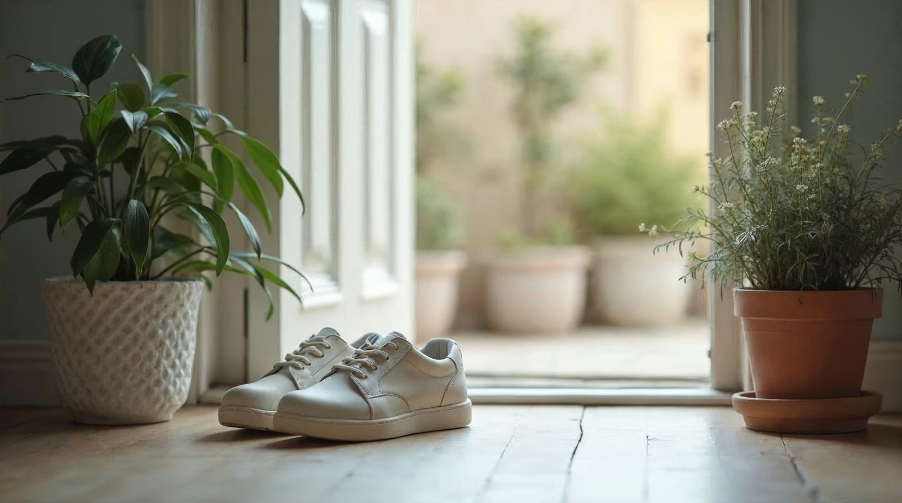
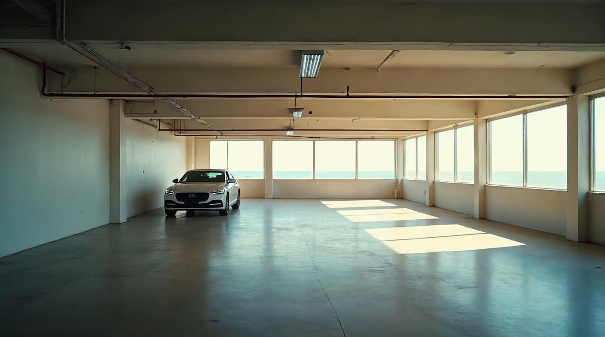
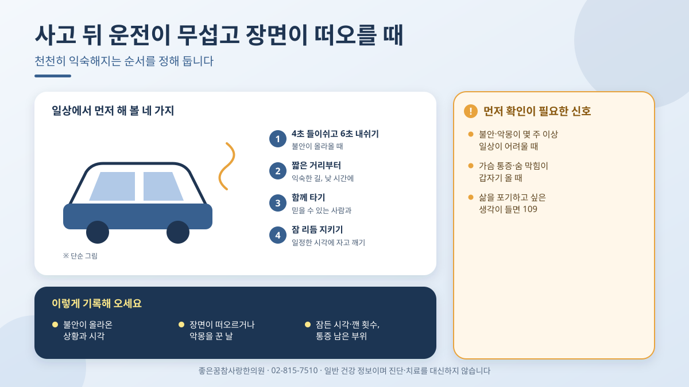

이종호 한의사 감수좋은꿈참사랑한의원 대표원장 (한의사 면허번호 19769)발행 2026-11-22 · 수정 2026-11-27
이 글의 차례
점심을 먹고 회사로 돌아가는 길, 횡단보도 앞에서 신호를 기다립니다. 옆 차선에서 경적이 짧게 울리는 순간 숨이 턱 막히고, 그날 차창 밖으로 다가오던 장면이 눈앞에 겹칩니다.
동료가 괜찮으냐고 묻는데 대답이 한 박자 늦게 나옵니다. 자리에 돌아와서도 손끝이 차고 모니터 글자가 눈에 잘 들어오지 않습니다. 퇴근길에는 택시 말고 지하철을 타야겠다고 속으로 조용히 정합니다.
진료실에서 이런 말씀을 자주 듣습니다. 몸은 이제 웬만한데 머릿속에서 그날이 자꾸 다시 돌아간다고요. 남들 앞에서는 아무렇지 않은 척하느라 하루가 두 배로 고단하다고도 하십니다.
사고가 난 지 몇 주나 지났는데 아직도 이러면 어디가 잘못된 건 아닌지, 이 상태가 언제까지 갈지 걱정도 하십니다. 그 걱정을 안고 출근하고, 밥을 차리고, 아이 얼굴을 보며 버틴 하루하루가 얼마나 무거우셨을까요.
답부터 말씀드리겠습니다. 사고 뒤 장면이 불쑥 떠오르고 차가 무서운 것은 크게 놀란 몸이 아직 경계를 풀지 못해 생길 수 있는 반응입니다. 시간이 지나며 차츰 잦아드는 분이 많지만, 그 속도는 사람마다 다릅니다.
그러니 이 시기는 억지로 이겨 내야 할 시험이라기보다, 놀란 몸을 달래며 지내는 시간에 가깝습니다. 장면이 떠오른 순간에 해 볼 일, 하루의 리듬, 잠과 몸의 긴장을 함께 챙겨 보세요.
다만 이런 상태가 한 달 넘게 이어지거나, 그 전이라도 일과 집안일이 손에 잡히지 않을 만큼 힘드시면 미루지 말고 진료를 받아 보세요. 극단적인 생각이 스친다면 혼자 버티지 마시고 109에 바로 전화하세요.
왜 장면이 불쑥 떠오르고 몸이 먼저 움찔할까요
크게 놀란 일을 겪으면 몸은 같은 위험을 다시 겪지 않으려고 그때의 소리와 장소, 장면을 단단히 붙들어 둡니다. 그래서 비슷한 신호가 들어오면 머리가 판단하기도 전에 몸이 먼저 긴장하는 것이지요.
그 신호는 생각보다 사소합니다. 우회전하며 다가오는 차, 뉴스 화면 속 찌그러진 범퍼, 안전띠가 가슴을 조이는 느낌, 멀리서 들리는 사이렌 같은 것들입니다. 지금 일이 아니라는 걸 알아차리기 전에 몸이 반 박자 먼저 움찔합니다.
장면이 갑자기 떠오르거나 꿈에 나오는 것도 놀란 기억이 아직 정리되는 과정일 수 있습니다. 마음이 약해서 생기는 일이 아니에요. 몸이 그날 세운 경계를 아직 다 내려놓지 못했을 뿐입니다.
몸에 남은 통증도 기억을 불러냅니다. 고개를 돌려 뒤를 볼 때 목이 당기거나 앉았다 일어설 때 허리가 걸리면, 그 감각이 그날을 다시 데려오기도 합니다. 통증과 놀람이 서로를 깨우는 셈이지요.
잠도 한몫합니다. 잠이 얕은 날에는 같은 소리에도 더 크게 놀라고, 낮의 피로가 불안을 키웁니다. 그래서 저는 떠오르는 장면만 따로 떼어 보지 않고 잠과 몸의 긴장을 함께 봅니다.
사고 이야기를 다 듣고 나면 저는 '통증'과 '후유증'을 나누어 말씀드리곤 합니다. 어딘가에 부딪혀 그 자리가 아픈 것이 통증이라면, 나아진 듯하다 다시 아프고 이곳저곳이 차례로 불편해지는 흐름을 저는 후유증이라고 설명드립니다.
사고가 계기가 되긴 했어도, 그 전부터 몸에 있던 약한 곳이 함께 흔들려 생기는 경우가 많습니다. 젠가 놀이를 떠올려 보시면 쉽습니다. 블록을 여러 개 빼내 이미 비틀비틀한 탑은 하나만 더 빼도 와르르 무너지지요.
오래 써 온 몸도 그 탑처럼 한 번의 충격이 여기저기로 번지기 쉽습니다. 놀람에도 비슷한 데가 있어서, 사고 전부터 잠이 얕았거나 많이 지쳐 있던 분이라면 같은 사고에도 놀람이 더 크고 오래 남을 수 있습니다.
그러니 같은 차에 탔던 사람이나 주변 사람과 견주어 나만 유난하다고 여기지 않으셨으면 합니다. 같은 충격이라도 그 사람의 몸이 그동안 어떻게 지내 왔느냐에 따라 흔들리는 모양이 다르니까요.
장면이 떠오른 그 순간에는 이렇게 해 보세요
장면이 떠오르면 대개 몸이 먼저 굳고 숨이 멈춥니다. 이때 장면을 억지로 밀어내려 애쓰면 오히려 더 붙잡히기 쉽습니다. 저는 장면과 씨름하기보다 몸을 지금 이 자리로 데려오는 쪽을 권합니다.
- 발바닥을 바닥에 꾹 붙이고, 의자 팔걸이나 손잡이처럼 손에 닿는 단단한 것을 잡아 봅니다
- 들이쉬는 숨은 편하게, 내쉬는 숨은 조금 길게 몇 번 이어 갑니다(어지러우면 바로 멈추세요)
- 눈에 보이는 것 세 가지를 속으로 하나씩 불러 봅니다. 신호등, 가방, 내 손처럼요
- 지금은 그날이 아니고 나는 여기 있다고 속으로 한 번 말해 봅니다
- 자리를 잠깐 옮길 수 있다면 찬물에 손을 씻거나 물 한 잔을 천천히 마셔 봅니다
이런 방법이 장면을 지워 주지는 않습니다. 그 순간 해 볼 수 있는 작은 방법으로, 몸이 지금 있는 자리를 알아차리도록 손잡이를 하나 건네 보는 정도입니다. 한 번에 가라앉지 않아도 괜찮아요. 파도처럼 올라왔다가 시간이 지나면 잦아드는 경우가 많습니다.
차 안에서 떠올랐다면 운전하는 분께 바로 말씀하세요. 속도를 조금 줄여 달라거나, 창문을 잠깐 열어 달라거나, 안전한 곳에 잠시 세워 달라고 부탁해도 괜찮습니다. 참고 버티기보다 말해 두는 편이 다음에 차에 오를 때 마음이 덜 무거울 수 있습니다.
직접 운전하다가 떠올랐다면 비상등을 켜고 안전한 곳에 차를 세운 뒤 숨부터 고르세요. 좀처럼 가라앉지 않는 날은 그날 운전을 거기서 멈추는 편이 안전합니다.
지나간 뒤에는 휴대폰 메모에 한 줄 남겨 두세요. 이 한 줄이 쌓이면 진료실에서 함께 펼쳐 볼 지도가 됩니다. 무엇을 적으면 좋을지는 아래 기록 부분에 정리했습니다.

놀란 몸은 긴장을 이런 곳에 숨겨 둡니다
소파에 누워 쉬는데도 어깨가 귀 쪽으로 올라가 있고, 이를 꽉 물고 있는 것을 뒤늦게 알아차리는 분이 많습니다. 사고 뒤에는 이런 긴장이 하루 내내 바닥에 깔려 있다가, 장면이 떠오르는 순간 한꺼번에 솟구치기도 합니다.
차에 타면 발에 힘이 들어가 있고, 손잡이를 꽉 쥐고, 숨을 참고 있는 것도 같은 모습입니다. 지금 이 글을 읽는 동안에도 어깨가 올라가 있지는 않으신가요? 하루 두세 번 턱, 어깨, 손, 배를 차례로 떠올리며 힘이 들어가 있는지 살펴보세요. 알아차리고 한 번 내려놓는 것으로 충분합니다.
저는 진료할 때마다 아픈 곳과 함께 체온, 소화, 잠, 대소변 네 가지를 살핍니다. 크게 놀란 뒤 가슴이 두근거리고 작은 일에도 움찔하는 모습도 이 네 가지와 떼어 놓고 보지 않습니다. 두근거림 이야기 끝에 밥맛이나 손발 온도를 묻는 것도 그래서입니다.
먼저 이렇게 여쭙니다
첫 진료에서는 아픈 곳 이야기에 이어 아래 것들을 차례로 여쭙니다. 그날 일을 다시 꺼내기가 버거우시면 그렇다고만 해 주세요. 한 번에 다 듣지 않고 여러 번에 나누어 듣겠습니다.
- 장면이 주로 언제 떠오르나요? 소리, 장소, 차 안, 뉴스나 영상 가운데 무엇이 계기가 되나요?
- 한 번 떠오르면 얼마나 가고, 무엇을 하면 가라앉나요?
- 운전석, 조수석, 뒷좌석, 버스나 택시 가운데 어디가 가장 힘드신가요?
- 사고 뒤 피하게 된 길이나 일, 줄어든 외출이 있나요?
- 잠들기 어렵거나 자다가 깨시나요? 사고 전 잠은 어땠나요?
- 목이나 허리처럼 아직 남은 통증, 드시는 약이 있나요?
저는 허리 통증을 몸이 켜 주는 경고등에 빗대곤 하는데, 그 불을 읽을 때 네 가지를 여쭙니다. 언제 켜지는지, 얼마나 자주 켜지는지, 한 번 켜지면 얼마나 가는지, 무엇을 하면 꺼지는지입니다. 떠오르는 장면도 이 네 가지로 나누어 적어 보면 흐름이 보이기 쉽습니다.
기억에 빈 곳이 있어도 괜찮아요. 생각나는 데까지만 들려주세요. 말씀하시다가 숨이 가빠지면 잠시 멈추고, 쉬었다가 이어 가겠습니다.
상황마다 조금씩 다르게 권합니다
예를 들어 길을 건너다 차에 부딪힌 적이 있다면, 운전과 상관없이 횡단보도 앞에서 다리가 굳을 수 있습니다. 초록불이 켜져도 우회전하는 차가 다가오면 발이 잘 떨어지지 않지요.
이럴 때는 당분간 사람이 많이 건너는 신호 횡단보도를 고르고, 초록불이 켜진 뒤 한 박자 쉬었다가 다른 사람과 함께 건너 보시길 권합니다. 길 하나를 다시 내 것으로 만드는 일도 작은 걸음부터입니다.
예를 들어 사고를 낸 쪽이어서 자책이 큰 경우도 있습니다. 장면과 함께 그때 왜 그랬을까 하는 생각이 꼬리를 물고 되풀이되지요. 자책도 크게 놀란 마음이 보이는 한 모습일 수 있어, 혼자 곱씹기보다 믿을 수 있는 사람에게 꺼내 놓으시길 권합니다.
예를 들어 보험이나 회사 일로 사고 경위를 여러 사람에게 되풀이해 설명해야 하는 경우, 말할 때마다 그 장면이 다시 살아나 힘들다는 분도 계십니다. 이럴 때는 기운이 있는 낮에 경위를 한 번 차분히 적어 두고, 그 메모를 보며 설명해 보세요.
같은 이야기를 매번 기억 속에서 새로 꺼내지 않아도 되니 한결 덜 지치실 수 있어요. 적어 둔 메모는 진료 때도 그대로 쓰실 수 있습니다.
일상에서 먼저 해 볼 수 있는 것
놀란 몸에는 어제와 비슷한 오늘이 안심이 됩니다. 거창한 계획보다 하루의 뼈대를 지키는 일부터 시작해 보세요.
- 일어나는 시각과 끼니 시간을 사고 전 하루와 비슷하게 지키기
- 한 시간에 한 번 턱과 어깨의 힘을 살피고, 어깨를 천천히 돌려 내려놓기
- 사고 영상이나 비슷한 뉴스는 일부러 찾아보지 않기, 잠들기 전에는 특히 멀리하기
- 피하게 된 일을 적어 보고, 그중 가장 쉬운 것 하나만 이번 주에 다시 해 보기
- 술로 긴장을 풀려 하지 않기, 커피는 오후 2시 전에 마치기
- 저녁에 이야기를 나눌 수 있을 만큼의 속도로 20~30분 걷기
잠들기 1~2시간 전 따뜻한 물에 몸을 담그는 시간은 하루의 긴장을 내려놓는 신호로 쓰기 좋습니다. 그럴 시간이 없으면 따뜻한 물로 충분히 샤워하거나 발만 10~15분 담그셔도 됩니다.
다시 운전대를 잡는 일은 서두르지 않으셔도 돼요. 해가 있을 때 익숙한 동네 길을 짧게, 믿을 만한 사람을 옆자리에 태우고 다녀오는 데서 시작해 편해지는 만큼 넓혀 가는 것이 흔히 권하는 순서입니다.
단계를 잘게 나누는 방법은 사고 뒤 운전대를 다시 잡기가 무서울 때는 어떻게 하나요?에 따로 정리해 두었습니다.
언제 다시 운전할지는 한의원에서 정해 드릴 수 있는 일이 아닙니다. 그날의 몸과 마음을 살펴 스스로 정하시되, 잠을 거의 못 잔 날은 쉬어 가세요.
드시는 약 가운데 졸리거나 어지러울 수 있는 것이 있다면, 운전대를 잡기 전에 처방한 의사나 약사에게 괜찮은지 먼저 물어보세요. 두세 가지 약을 함께 드신다면 더 챙겨 주세요.
운전을 쉬는 동안에도 다니던 곳은 지하철이나 버스로 계속 다니시길 권합니다. 가던 길을 하나씩 접다 보면 바깥으로 나서는 일 자체가 점점 무거워지기 쉽습니다.
곁에 있는 가족이 해 줄 수 있는 것
사고를 겪은 본인은 괜찮다, 별일 아니라며 넘기기 쉽습니다. 그래서 곁에 있는 사람의 눈이 큰 힘이 됩니다. 다만 돕고 싶은 마음이 앞서 '이제 그만 잊어', '그 정도 사고로 뭘 그래' 같은 말이 나오면 본인은 더 입을 닫게 됩니다.
무슨 말을 해야 할지 모르겠다면 '많이 놀랐지' 한마디면 됩니다. 이야기를 억지로 끌어내지 마시고, 스스로 꺼내면 중간에 고쳐 주려 하기보다 끝까지 들어 주세요. 운전을 다시 하라고 재촉하지 않는 것도 큰 도움입니다.
손을 구체적으로 보태 주시면 더 좋습니다. 며칠은 장보기나 아이 등하원 운전을 대신 맡아 주시고, 함께 차를 탈 때는 급하게 서거나 경적을 울리는 일을 줄여 조용히 운전해 주세요. 밤에 잠을 설치는지, 술이 늘었는지도 가만히 지켜봐 주세요.
함께 타고 있던 가족도 저마다 놀랐을 수 있습니다. 한 사람만 챙기다 보면 다른 사람의 놀람을 놓치기 쉬우니 서로의 잠과 기분을 한 번씩 물어봐 주세요. 아이가 함께 탔다면 차에 타기 싫어하거나 밤에 자주 깨는지도 살펴 주세요.

한의원에서 함께 살필 수 있는 경우
- 장면이 떠오를 때마다 목과 어깨가 굳고 가슴이 두근거리는 경우
- 사고 뒤 잠이 얕아지고 낮에도 쉽게 놀라 하루 리듬이 흐트러진 경우
- 남은 통증 때문에 차에 탈 때마다 그날이 떠오르는 경우
- 다른 치료를 받으면서 굳은 몸과 얕은 잠도 같이 살피고 싶은 경우
좋은꿈참사랑한의원에 처음 오시면 사고 경위와 함께 지금 가장 힘든 것이 통증인지, 잠인지, 떠오르는 장면인지 먼저 듣습니다. 다른 병원에서 받은 검사 결과가 있으면 가져와 주시고, 수면제나 안정제처럼 드시는 약은 이름이 보이게 약 봉투를 챙기거나 사진으로 찍어 오셔도 됩니다.
이야기를 들은 다음에는 숨을 한 번 고르시게 하고 양손의 맥을 짚습니다. 저는 처음 오신 분이든 다시 오신 분이든 맥부터 짚는데, 교통사고로 오셨다고 해서 다르지 않습니다. 맥을 짚으며 잠과 밥맛, 몸이 차거나 뜨겁게 느껴지는지, 대소변은 편한지도 함께 여쭙습니다.
진맥을 기본으로 하고 필요하다고 판단될 때 혀를 보며, 아픈 곳이 있으면 직접 움직여 보시게 해 확인합니다. 그런 뒤 몸의 긴장과 잠, 통증 가운데 무엇부터 다룰지 정하고, 상태에 따라 침이나 한약 상담 등 맞는 방법을 함께 정합니다.
치료 중에 자세나 온도, 자극이 맞지 않으면 참지 마시고 그때그때 말씀해 주세요. 제가 아끼는 말 가운데 "우리 한의원은 잘 쉬다가는 곳."이라는 말이 있습니다. 놀란 몸이 머무는 동안만큼은 편히 쉬었다 가셨으면 합니다.
이미 다른 곳에서 치료를 받고 계시다면 그 치료를 그대로 이어 가시면 되고, 드시던 약은 처방한 의사와 상의 없이 줄이거나 끊지 않습니다. 한의원 진료는 그 곁에서 잠과 몸의 긴장을 함께 살피는 자리입니다.
자동차보험으로 진료받으실 수 있는지는 보험사 담당자에게 먼저 알아보시고, 접수 때 무엇이 필요한지는 방문 전 전화(02-815-7510)로 확인해 주세요.
다시 오시면 적어 두신 메모부터 함께 봅니다. 지난번에 가장 힘들다고 하신 것이 그사이 어땠는지 이어서 여쭙고, 맥도 다시 짚어 지난번과 견주어 봅니다. 다른 날 다른 원장이 진료하더라도 이전 기록을 보고 이어 갑니다.
이렇게 기록해 오시면 상담이 쉬워집니다
- 장면이 떠오른 날짜·시각과 계기(소리, 장소, 차 안, 영상)
- 한 번 떠오르면 얼마나 갔는지, 무엇을 했더니 가라앉았는지
- 그때 몸의 반응(두근거림, 땀, 숨 참음, 이 악물기)과 그 세기를 0~10점으로
- 잠든 시각과 깬 횟수, 악몽을 꾼 날
- 피하게 된 길이나 일, 이번 주에 다시 해 본 것
- 드시는 약과 술을 마신 날
적는 모양은 이 정도면 됩니다. '화요일 점심, 횡단보도에서 경적 소리. 두근거림 7점, 5분쯤 감. 발 붙이고 숨 내쉬니 가라앉음.' 이런 줄이 여러 날 모이면 어떤 날, 어떤 계기에 유독 힘든지가 드러납니다.
이런 증상은 먼저 확인이 필요합니다
- 가슴이 조이듯 아프거나 배가 아픈 경우, 숨이 막히는 느낌이 갑자기 심해지는 경우(가까운 응급실)
- 의식이 흐려지는 경우, 두통이 점점 심해지거나 구토가 되풀이되는 경우(가까운 응급실)
이런 신호가 있으면 한의원보다 가까운 병원이나 응급실을 먼저 찾으세요.
마치며
그날의 몇 초가 몇 주째 하루 곳곳에 끼어드니 얼마나 지치셨을까 싶습니다. 오늘 장면이 떠올랐다고 해서 뒤로 간 것은 아닙니다. 떠오른 날에도 출근하고, 밥을 먹고, 잠자리에 드셨다면 그 하루는 잘 건너온 하루예요.
예전에 진맥 이야기를 하다가, 몸이 그 사람을 기다려 주고 있다는 말을 한 적이 있습니다. 바쁜 하루에 밀려 미처 돌보지 못하는 사이에도 몸은 그 사람을 위해 기다려 주고 있더라는 뜻이었습니다.
사고 뒤로 놀란 채 하루하루를 버텨 온 몸에게도, 발바닥 한 번, 긴 날숨 한 번으로 하루에 몇 번씩 눈길을 건네 주세요.
다음에 오시면 적어 두신 한 줄과 함께, 그사이 다시 해 본 일이 하나라도 있었는지부터 여쭙겠습니다.
함께 읽으면 좋은 글
- 사고 뒤 운전대를 다시 잡기가 무서울 때는 어떻게 하나요?
- 교통사고 뒤 불안하고 잠을 못 잘 때는 어떻게 살피나요?
- 쉬고 있는데도 몸이 긴장된 느낌이 풀리지 않는 이유는 무엇인가요?

여쭙는 것
- 장면이 주로 언제 떠오르나요? 소리, 장소, 차 안, 뉴스나 영상 가운데 무엇이 계…
- 한 번 떠오르면 얼마나 가고, 무엇을 하면 가라앉나요?
- 운전석, 조수석, 뒷좌석, 버스나 택시 가운데 어디가 가장 힘드신가요?
생활에서 해 볼 것
- 일어나는 시각과 끼니 시간을 사고 전 하루와 비슷하게 지키기
- 한 시간에 한 번 턱과 어깨의 힘을 살피고, 어깨를 천천히 돌려 내려놓기
- 사고 영상이나 비슷한 뉴스는 일부러 찾아보지 않기, 잠들기 전에는 특히 멀리하기
한의원에서 함께 살필 것
- 장면이 떠오를 때마다 목과 어깨가 굳고 가슴이 두근거리는 경우
- 사고 뒤 잠이 얕아지고 낮에도 쉽게 놀라 하루 리듬이 흐트러진 경우
- 남은 통증 때문에 차에 탈 때마다 그날이 떠오르는 경우
먼저 확인이 필요한 신호
- 가슴이 조이듯 아프거나 배가 아픈 경우, 숨이 막히는 느낌이 갑자기 심해지는 경우(…
- 의식이 흐려지는 경우, 두통이 점점 심해지거나 구토가 되풀이되는 경우(가까운 응급실)
한눈에 보는 표
| 구분 | 핵심 |
|---|---|
| 여쭙는 것 | 장면이 주로 언제 떠오르나요? 소리, 장소, 차 안, 뉴스나 영상 가운데 무엇이 계기가 되나요? 한 번 떠오르면 얼마나 가고, 무엇을 하면 가라앉나요? |
| 생활에서 해 볼 것 | 일어나는 시각과 끼니 시간을 사고 전 하루와 비슷하게 지키기 한 시간에 한 번 턱과 어깨의 힘을 살피고, 어깨를 천천히 돌려 내려놓기 |
| 한의원에서 함께 살필 것 | 장면이 떠오를 때마다 목과 어깨가 굳고 가슴이 두근거리는 경우 사고 뒤 잠이 얕아지고 낮에도 쉽게 놀라 하루 리듬이 흐트러진 경우 |
| 먼저 확인이 필요한 신호 | 가슴이 조이듯 아프거나 배가 아픈 경우, 숨이 막히는 느낌이 갑자기 심해지는 경우(가까운 응급실) 의식이 흐려지는 경우, 두통이 점점 심해지거나 구토가 되풀이되는 경우(가까운 응급실) |
자주 묻는 질문
장면이 떠오를 때 다른 생각을 하려고 애써도 잘 안 돼요.
억지로 밀어낼수록 더 붙잡히는 경우가 있습니다. 장면과 씨름하기보다 발바닥을 바닥에 붙이고 숨을 길게 내쉬며 지금 있는 자리로 주의를 옮겨 보세요. 자주 되풀이되면 적어 둔 메모와 함께 진료 때 말씀해 주세요.
제가 낸 사고라 자책이 커요. 이런 이야기도 해도 되나요?
네. 사고를 낸 쪽이든 당한 쪽이든 크게 놀란 몸의 반응은 비슷하게 올 수 있습니다. 자책이 길게 이어지거나 일상이 어렵다면 그 마음도 진료실에서 편하게 꺼내 주세요.
아이도 함께 타고 있었는데, 아이도 이럴 수 있나요?
아이도 놀랄 수 있습니다. 차에 타기 싫어하거나 밤에 자주 깨고 작은 소리에 놀라는지 지켜봐 주세요. 이런 모습이 오래가거나 일상이 어려우면 아이와 함께 오셔서 잠과 식사, 긴장을 함께 살펴보세요.
다시 운전대를 잡는 건 언제부터가 좋을까요?
서두르지 않으셔도 됩니다. 처음에는 조수석에 타 보거나 한적한 시간에 짧은 거리만 운전해 보는 식으로 조금씩 넓혀 가시길 권합니다. 저는 그 과정에서 잠과 몸의 긴장이 어떻게 달라지는지 진료 때 함께 봅니다.
좋은꿈참사랑한의원은 재진 때 지난번 이야기부터 이어서 여쭙니다. 진료시간과 예약은 오시는 길에서 확인하세요.
어디서 상담받을 수 있나요?
좋은꿈참사랑한의원은 서울 동작구 만양로2길 2 신성빌딩 3층·5층(서울 동작구 상도동, 7호선 상도역 3번 출구 근처)에 있습니다. 한의사 3명(이종호 대표원장, 조영기 수석진료원장, 정원영 진료원장)이 진료합니다. 진료시간은 평일 09:30~20:00(점심 13:00~14:00), 토·일·공휴일 09:30~15:00이며, 방문 전 전화로 확인을 권합니다. 예약은 네이버 예약, 카카오톡 상담, 전화 02-815-7510로 받습니다.
이 글은 일반적인 건강 정보이며 개인의 진단이나 치료를 대신하지 않습니다. 증상이 있거나 복용 중인 약이 있다면 진료를 통해 확인하세요. 치료 효과는 개인마다 다를 수 있습니다.
작성 기준: 일반적으로 알려져 있는 건강 정보를 참고해 정리했습니다(대표원장 감수). 증상 기록은 1~2주 동안 하루 1회, 비슷한 시간에 적어 오시면 지난 상태와 비교하기 쉽습니다.